小林 爆誕
この世に生を受ける。
〜 2003 - 2026：二人の狂気と友情の全記録 〜
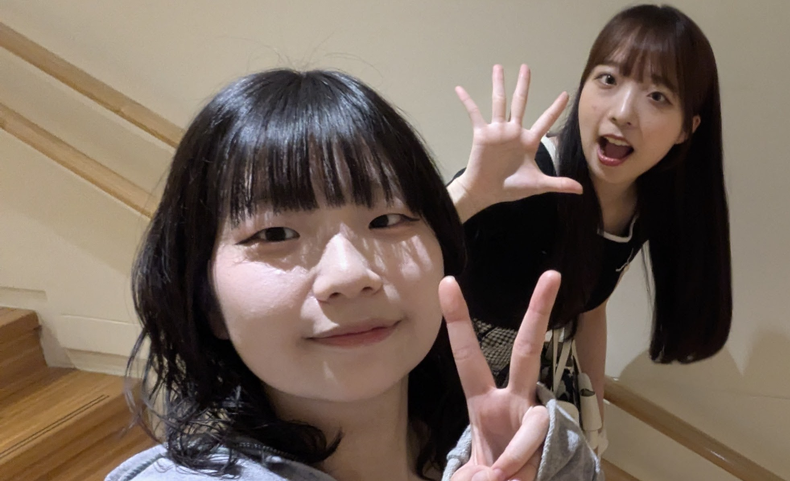
これは、小林と七帆が歩んできた、時に美しく、時にヒステリックな軌跡。
出席番号が前後になったあの日から、私たちの物語は加速し始めた。
この世に生を受ける。
この世に生を受ける。
通学路「赤コース」にて、互いの存在を視認。ただし、交流はない。
3年1組に配属。担任は新井紀子。正式に「出会い」を果たす。
国語で「たんぽぽのちえ」（光村図書）を扱った際の授業にて、おともだちに知識マウントを取るための作文を書かされる。
その際に小林が七帆宛に文章を書いたことが２０１６年８月に判明した。
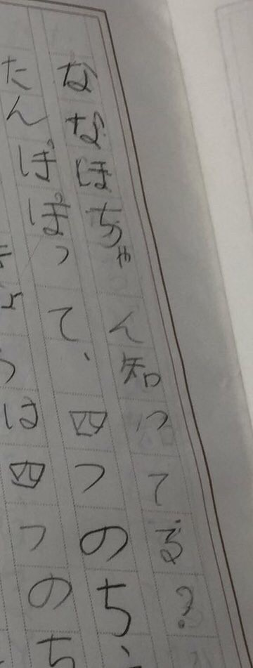
1年2組に配属。名字の並びにより、出席番号が前後になる。
これがきっかけで急速に仲が深まり、ヒステリーな日常が加速していく。
青団として参戦。一致団結した応援が実を結び、見事応援賞を獲得した。
一方で、小林は百足競争において、足並みが揃わない絶望感とともに苦い思い出を刻むこととなった。
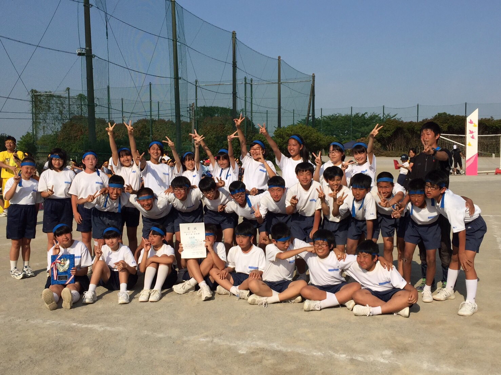
練習中、小林の失言により、取っ組み合いの喧嘩へ発展。
本来「共通の敵」であったはずのめいに仲介・なだめられるという、前代未聞の屈辱的結末を迎えた。
🙇♂️ ほんますいませんでした（小林）
「食べたものをリアルタイムで報告する」という謎のトレンドが発生。小林がじゃがりこの写真を送った瞬間、ななほも全く同じタイミングでじゃがりこを食べていたという奇跡。
このシンクロはのちに「伝説」として語り継がれ、語録集への追加を余儀なくされた。
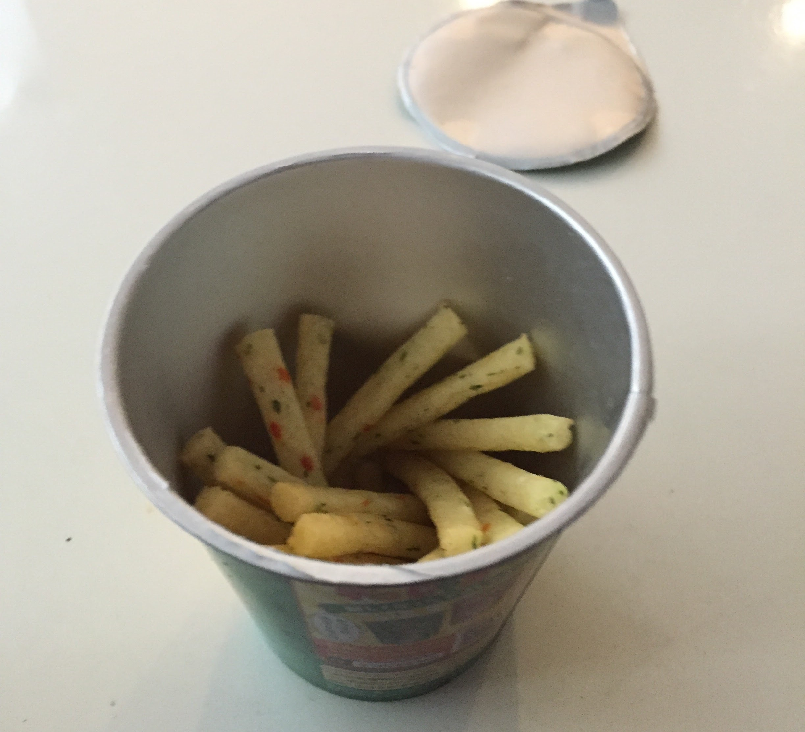
七帆から誕生日プレゼントを贈呈される。しかし、渡されたビニール袋の表面には、おびただしい量の文字が書き込まれていた。
その視覚情報の暴力に圧倒され、肝心の中身が何であったか、記憶の彼方へ消失した。
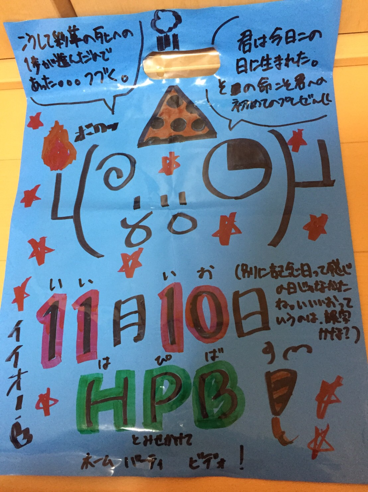
七帆の家でマックを食す。ハッピーセットのおもちゃを無理やり分解するという暴挙に出た後、昼寝。
小林にとっては「初めて他人の家で就寝した」という歴史的な日となった。
なお、分解によって散らばった破片の掃除は、家主にとって相当な苦行だったらしい。
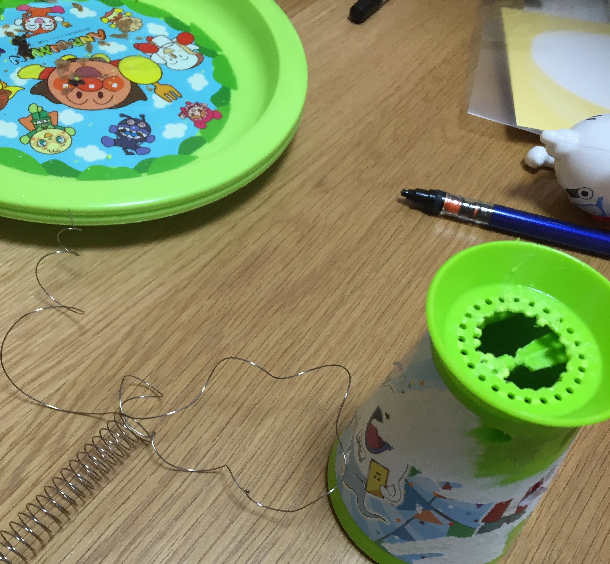
カラオケ「ベイブリッジ」にて、激しい喧嘩が勃発。
そのまま隣のファミマへ移動し、イートインスペースで「無言のアイスタイム」を敢行。
🍦 溶けかけのアイスと、凍りついた空気。
小林の母から割引券を譲り受け、サンリオピューロランドへ。しかし、現地で致命的な喧嘩が勃発。
多摩センターからの帰路、電車内は一言も発しない「地獄の無言行」と化した。
あまりの気まずさに、途中のコンビニで水を買った感触だけが今も鮮明に記憶に残っている。
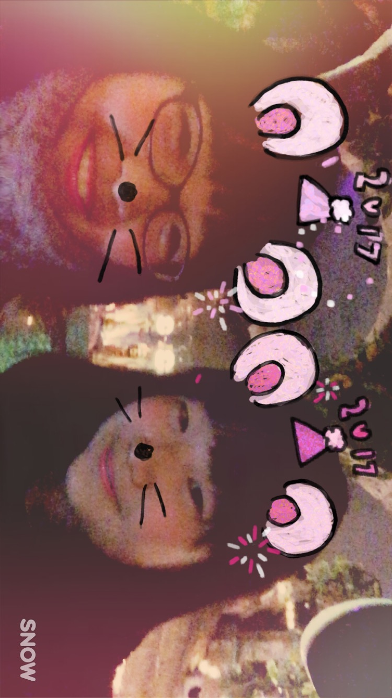
技術の授業で栽培。個別に名前をつけ、毎日Twitterへ投稿する熱の入れようだった。
ちなみに小林のかいわれちゃん、練習用は驚くほど伸び伸びと育ったが、肝心の本番用は枯れ果てるという悲劇。
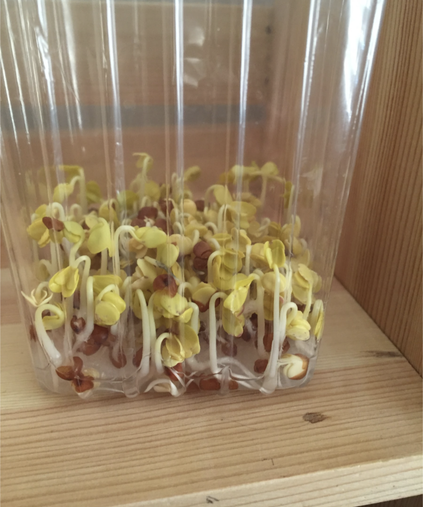
ななほ・小林・ここみの3人衆で結成されたドリームチーム。小林宅にて3回に及ぶ猛特訓を敢行。
「むっきり」「あしながおじさん」等、暗記法を生み出した。
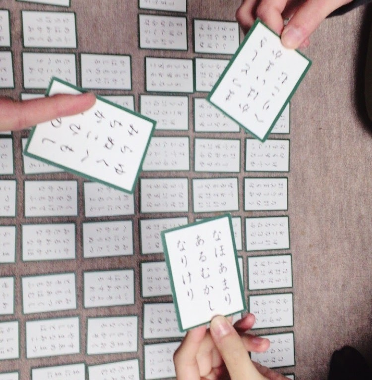
スキー初心者クラスにて、連番になる私たち。
雪山で無数に転倒し、二人揃って深刻な筋肉痛に苛まれた。
（インストラクターの先生、すごく優しかった）

小林からの献上品：
① 「円周率100万桁」の本
② 「スヌーピーのお弁当箱」
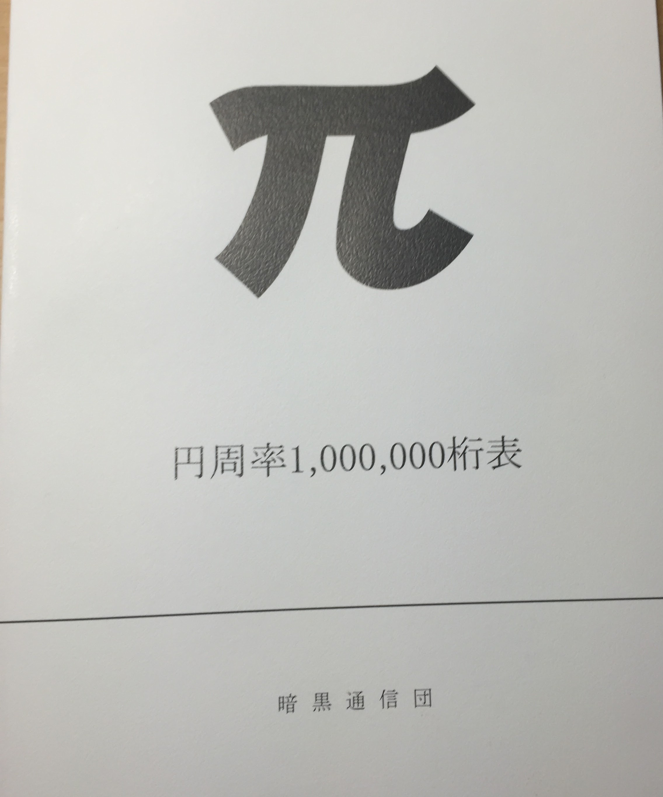
🍱 お弁当箱の方は写真が残っていない。幻だったのかもしれない。
祝・2年生！クラスは別々になったけれど、安定の放課後。
そしてプリクラ
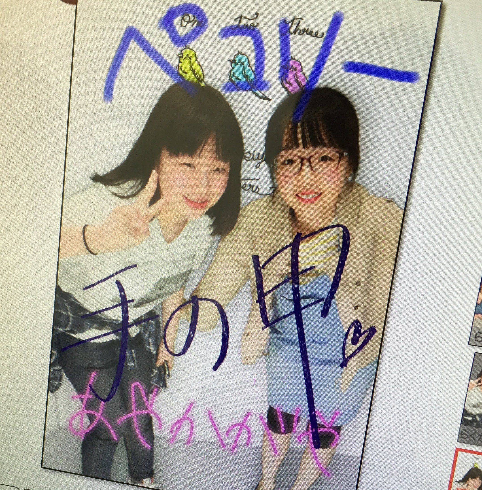
▲ 問題の「ぺこりー」プリクラ
落書きが痛すぎて直視できない。ぺこり〜じゃないんだよ。
正直「あやかがや」はセンスある
湘南ゼミナールに入塾して半年。平和な帰り道のはずが、同行していた「めい」から恐喝を受ける。
抵抗虚しく、ななほから届いていた「めいへの愚辞LINE」を強制開示させられるという、この世の終わりを経験。
🔥ななほ、ほんまにすいませんでした（再）。
--- 以降、中学・高校時代の事件を経て現在へ（作成中） ---
りがみが痛すぎるストーリーを投下。BeRealのスクリーンショットに添えられた「治安渋谷」という誇らしげな文言。
しかし、冷静に考えてほしい。お前のキャンパスは本当に渋谷なのか？
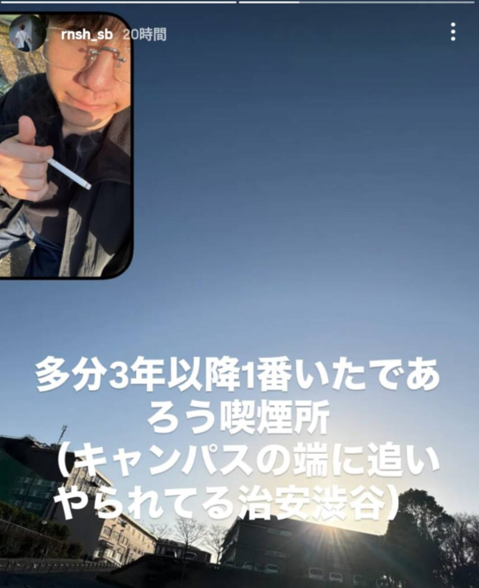
ななほ：新社会人として始動。
小林：春休み。ハンガリーにて引きこもり中。
温泉？旅館で飯食って寝よう